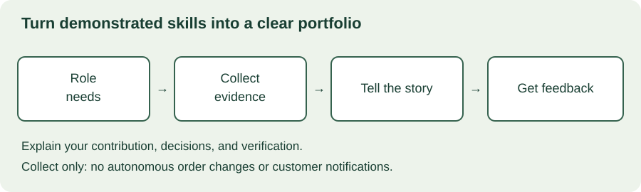

MODULE 04 · ADVANCED FIELD ENGINEERING
You have practiced discovery, architecture, delivery, and executive communication. The next challenge is making those abilities visible to a hiring team or manager. A convincing FDE portfolio explains decisions and outcomes, not just technologies. This chapter turns the academy's exercises into evidence you can discuss, while keeping simulated work clearly distinguished from professional experience.
Learning objectives
- Translate a target role into observable capabilities.
- Build a portfolio around decisions, evidence, and personal contribution.
- Prepare technical and customer-facing interview stories.
- Practice ambiguous scenarios without inventing facts.
- Create a focused growth plan with feedback and review dates.
Allow 100–130 minutes. Prerequisites: Chapters 11, 16, and 22. Produce a role-evidence map, one case study, and a 30-day practice plan. The review lab is a learning aid, not an employer assessment or a prediction of hiring success.
23.1 Define the role you are targeting
FDE titles can cover different combinations of implementation, solution design, customer discovery, operations, and product feedback. Read the actual role description and ask the recruiter how the team divides these responsibilities. Do not assume every organization uses the same interview loop, travel expectations, technical stack, or success measures.
Convert requirements into observable behavior. “Strong communication” might mean explaining a trade-off to a nontechnical sponsor. “Technical depth” might mean debugging an integration failure and validating the fix. “Ownership” might mean coordinating a handoff and checking that the customer can operate the result.
| Capability | Evidence you could show | Question to prepare for |
|---|---|---|
| Discovery | Problem statement, assumptions, acceptance criteria | What changed after you spoke to users? |
| Technical judgment | Architecture alternatives and a tested implementation | Why this design, and when would you change it? |
| Delivery | Validation, rollout, rollback, and handoff artifacts | How did you know it was ready? |
| Customer partnership | Scope decision and stakeholder update | How did you handle disagreement? |
| Outcome ownership | Measurement plan and observed results | What improved, and what remains uncertain? |
23.2 Build a small portfolio with depth
Choose a few cases that demonstrate different strengths rather than a long list of shallow demos. One case might show an integration under constraints; another might show a difficult scope decision or a measured operational improvement. A reviewer should be able to understand the problem, inspect the evidence, and ask deeper questions.
For each case, include context, constraints, your role, alternatives, implementation, validation, outcome, and reflection. Put the most useful artifacts near the relevant claim. A diagram supports an architecture explanation; a test result supports a behavior claim; neither proves customer adoption by itself.
A repository README can explain how to run the project, the safe sample data, supported scope, and known limitations. A GitHub profile README can provide an overview and links to selected work. GitHub's documentation explains how the profile feature works; a polished profile is a discovery aid, not a substitute for substantive evidence.

23.3 Be precise about ownership and disclosure
Explain what you personally decided or implemented and where teammates contributed. “We launched the service” and “I designed the retry policy and validated recovery behavior” can both be true. Avoid taking credit for an entire outcome when your contribution was one part of a broader effort.
Label academy work as a simulation. For example: “Built a synthetic customer integration case to practice discovery, authorization, and operational handoff.” Do not turn the fictional Harbor scenario into a claimed client engagement or invent adoption metrics to make it sound stronger.
Use material you are permitted to disclose. Removing a customer name may not remove identifying architecture details, commercial data, screenshots, or embedded credentials. If a real case cannot be shared, describe the decision at an appropriate level or build a clearly labeled synthetic example. Do not assume a private repository grants permission to disclose employer material to interviewers.
Claim rewrite
Weak: “Transformed enterprise logistics and saved thousands of hours.”
Defensible simulation: “Built a synthetic exception-review prototype with warehouse-scoped access checks, failure-case tests, and a rollout plan. Compared two integration designs and documented what would require validation in a real deployment.”
For real work: Add only verified outcomes, their measurement context, and your actual contribution, subject to disclosure permission.
23.4 Tell a decision-centered interview story
Use a structure such as situation, task, action, and result to keep a behavioral answer coherent. Explain the constraint, your specific action, and what happened. Then add what you learned or would change. Amazon's interview guidance discusses the STAR structure; it is one employer's guidance, not a universal FDE scoring standard.
The useful detail is often the decision: what alternatives existed, what evidence you gathered, and why you chose one. A story that lists tools but cannot explain trade-offs leaves technical judgment unclear. A story that ends at deployment leaves adoption and operational ownership unclear.
Prepare both a short version and a deeper version. Start with enough context to understand the stakes, then let follow-up questions guide detail. If the outcome was disappointing, explain the signals you missed and the concrete change you made afterward. A realistic failure story can demonstrate learning more credibly than a flawless but vague success narrative.
23.5 Interactive portfolio review lab
Review one case study against these evidence checks. Check an item only if another person could inspect it in the case. The result identifies missing pieces; completing every item does not prove technical correctness or guarantee an interview outcome.
Case-study evidence checklist
Prioritize the disclosure check before sharing. Then fix claims that lack evidence or unclear contribution. Improving the visual polish is useful only after the reader can understand and trust the story. Ask a peer to identify the decision you made; if they cannot, revise the narrative rather than adding more screenshots.
23.6 Practice technical ambiguity
In a mock design exercise, begin by clarifying the user, workflow, data, constraints, and acceptance criteria. State assumptions when information is missing and explain which assumptions would change the design. Avoid spending the whole session asking questions: make reasonable assumptions explicit and progress to a solution.
For a debugging exercise, narrow the failure with observable evidence. Explain your hypotheses, the next discriminating check, and how you will avoid changing several variables at once. After a proposed fix, describe verification and rollback. Do not claim to have executed a test that you merely described.
For a coding exercise, agree on the input and expected behavior, implement a clear solution, and check edge cases. Explain trade-offs and limitations. Ask the interviewer about permitted tools or assistance; use the rules of that assessment rather than assuming your everyday workflow is allowed.
Mock technical prompt
“A customer reports duplicate exception records after a retry. Design an investigation and propose a fix.”
Practice clarifying identifiers, retry boundaries, write semantics, and observed duplication. Compare idempotency strategies, discuss concurrency and retention, and propose tests for repeated and concurrent requests. Explain what evidence would distinguish a source duplicate from a retry-induced duplicate.
23.7 Practice the customer conversation
A customer-facing role also tests whether you can preserve trust under disagreement. Practice explaining a constraint, proposing options, and confirming a decision. Use plain language first, then add technical detail appropriate to the audience.
Interview scenario
An interviewer asks you to describe an academy simulation as a real customer project because “it sounds stronger.” How should you respond?
Also rehearse a sponsor requesting an unrealistic deadline, a customer disputing a metric, and a teammate disagreeing with your design. Ask your practice partner to assess whether your response made the decision and next step clear, not just whether you sounded confident.
23.8 Create a focused growth plan
Choose one or two gaps supported by feedback. “Become better at system design” is too broad to review. “Explain two integration alternatives, their failure modes, and an acceptance test in a ten-minute mock session” is observable.
In the first week, inventory evidence and draft one case. In the second, close a technical gap with a small verified implementation. In the third, run a mock technical session and customer conversation. In the fourth, revise the case and repeat the weakest exercise with a different prompt. This is a suggested practice sequence, not a guaranteed hiring timeline.
Keep a feedback log with the observed behavior, its effect, and the next experiment. Distinguish feedback about communication from missing technical understanding; polishing a narrative cannot repair an untested design. For growth within a team, ask your manager which scope and outcomes demonstrate the next level rather than inferring promotion criteria from a title.
23.9 Portfolio and interview workshop
Scenario: You are moving from software engineering into an FDE role. Your strongest real experience is debugging a production integration with a team. You also completed the academy's fictional Harbor capstone. The real project's customer data cannot be shared. Your current portfolio lists technologies and claims “enterprise transformation” without explaining your role.
Spend 30–40 minutes rewriting the portfolio into two honest cases. For the real case, choose an appropriate disclosure-safe level of detail and separate your contribution. For the simulation, label it explicitly and link the artifacts you actually built. Draft a two-minute behavioral story and a ten-minute technical walkthrough. Identify the one capability for which your evidence is weakest.
Worked response outline
Replace inflated claims with specific actions and evidence. Describe the real integration investigation without disclosing restricted material, and explain what you personally diagnosed or changed. Label Harbor as a synthetic learning project. Show its requirements, design choices, tests, and limitations; do not invent production adoption. Ask a peer to challenge one design assumption and one outcome claim. Use that feedback to choose the next practice task.
| Rubric | Points |
|---|---|
| Honest attribution and safe disclosure | 25 |
| Problem, constraints, and decision rationale | 25 |
| Implementation and meaningful verification | 20 |
| Outcome evidence and reflection | 20 |
| Focused feedback and growth plan | 10 |
23.10 Verified resources
Primary-source pages checked October 29, 2026. Confirm the specific employer's current interview process and permitted tools directly.
- GitHub Docs: Managing your profile README — create an overview that points readers to selected evidence.
- Amazon Jobs: Interview loop — employer-specific guidance on behavioral preparation and structured examples.
23.11 Knowledge check
23.12 Completion check
You can now show what you can do through a defensible case study, explain your decisions under questioning, and turn feedback into a concrete practice plan. Chapter 24 will bring these skills together in the final customer-engagement capstone.
Field notes
What claim in your portfolio needs stronger evidence or a more precise description of your contribution?